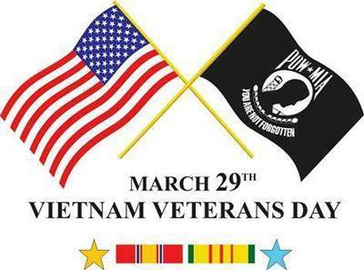

|
 Useful Idiots; Saul Alinsky died about 43 years ago, but his writings influenced those in political control of our nation today....... Recall that Hillary did her college thesis on his writings and Obama writes about him in his books. Died: June 12, 1972, Carmel-by-the-Sea, Monterey County, CA. Education: University of Chicago Spouse: Irene Alinsky Books: Rules for Radicals, - Reveille for Radicals. Anyone out there think that this stuff isn't happening today in the U.S.? All eight rules are currently in play. How to create a socialist state by Saul Alinsky: There are eight levels of control that must be obtained before you are able to create a socialist state. The first is the most important. 1) Healthcare - Control healthcare and you control the people 2) Poverty - Increase the Poverty level as high as possible, poor people are easier to control and will not fight back if you are providing everything for them to live. 3) Debt - Increase the debt to an unsustainable level. That way you are able to increase taxes, this will produce more poverty. 4) Gun Control - Remove the ability to defend themselves from the Government. That way you are able to create a police state. 5) Welfare - Take control of every aspect of their lives (Food, Housing, and Income) 6) Education - Take control of what people read and listen to Take control of what children learn in school. 7) Religion - Remove the belief in God from the Government and schools. 8) Class Warfare - Divide the people into the wealthy and the poor. This will cause more discontent and it will be easier to take (Tax) the wealthy with the support of the poor. Does any of this sound like what is happening to the United States? Alinsky merely simplified Vladimir Lenin's original scheme for world conquest by communism, under Russian rule. Stalin described his converts as "Useful Idiots." The Useful Idiots have destroyed every nation in which they have seized power and control. It is presently happening at an alarming rate in the U.S. If people can read this and still say everything is just fine, they are "useful idiots". |
|
Written by a gunsmith that knows his stuff. Anyone can Google StG'44 and read the history. Hugo Schmiesser (of Schmeisser Machine pistol fame) had a team which sought to develop new "wonder weapons" to win the war. They identified a gap in the German small arms inventory which was inadequate rates of fire from their Mauser bolt action rifles. They wanted a single-man-carried fully automatic light weight gun firing a rifle cartridge. They designed the gun around a new cartridge which was a shortened version of their 7.92mm x 57mm Mauser round which became the 7.92mm x 33mm or 7.92 Kurz, or "short" in English. Naturally the bullet was shortened proportionally. They had a few prototypes that failed but the final version, the "Machinepistole '43" was presented to Hitler on the Russian Front. He had forbidden new small arms development and this project was executed behind his back. In a desperate moment he asked his staff to specify what was needed to win, and was presented with this new gas-operated lightweight machine gun. He promptly named it "Sturmgehwer ": assault weapon. The AK47 is a rip off of this design. Hugo Schmeisser was captured and worked with Sgt. Kalashnikov at his design bureau. Therefore, any weapon that has the same features and functions as a Stg.'44 is an assault weapon, that is; it must be a lightweight, fully automatic, gas operated aircooled weapon supplied by a box magazine and capable of being carried, operated, loaded and maintained by one soldier. This means that your AR-15 is not an assault weapon. It does not matter if an untruth is repeated a million times, it will still be untrue. You can research this but that's the story. |